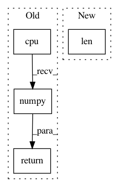

8c1c77869f84011285f9f5aa0d76f8abcdd3853b,pyprob/trace.py,Trace,__repr__,#Trace#,48
Before Change
self.log_prob = 0
def __repr__(self):
return "Trace(length:{}, samples:[{}], observes_variable:{}, result:{}, log_prob:{})".format(
self.length,
", ".join([str(sample) for sample in self.samples]),
self.observes_variable.data.cpu().numpy().tolist(),
self.result.data.cpu().numpy().tolist(),
float(self.log_prob)
)
def _find_last_sample(self, address):
indices = [i for i, sample in enumerate(self.samples) if sample.address == address]
if len(indices) == 0:
After Change
self.length_controlled = 0
def __repr__(self):
return "Trace(controlled:{}, uncontrolled:{}, observed:{}, log_prob:{})".format(len(self.samples), len(self.samples_uncontrolled), len(self.samples_observed), float(self.log_prob))
def _find_last_sample(self, address):
indices = [i for i, sample in enumerate(self._samples_all) if sample.address == address]
In pattern: SUPERPATTERN
Frequency: 4
Non-data size: 4
Instances
Project Name: pyprob/pyprob
Commit Name: 8c1c77869f84011285f9f5aa0d76f8abcdd3853b
Time: 2018-03-06
Author: atilimgunes.baydin@gmail.com
File Name: pyprob/trace.py
Class Name: Trace
Method Name: __repr__
Project Name: IBM/adversarial-robustness-toolbox
Commit Name: 705d7ff759a0b76ddf1b30ab8ef135c0b67efa8b
Time: 2020-04-23
Author: M.N.Tran@ibm.com
File Name: art/attacks/evasion/projected_gradient_descent/projected_gradient_descent_pytorch.py
Class Name: ProjectedGradientDescentPytorch
Method Name: generate
Project Name: IBM/adversarial-robustness-toolbox
Commit Name: e21ef336207b0f9ae378c77430d298945827830a
Time: 2019-02-12
Author: M.N.Tran@ibm.com
File Name: art/classifiers/pytorch.py
Class Name: PyTorchClassifier
Method Name: get_activations
Project Name: arraiy/torchgeometry
Commit Name: e06eee5deec11dc03d6c4975eb9a57f2bc6edd30
Time: 2019-05-28
Author: jiangwei1993@gmail.com
File Name: kornia/utils/image.py
Class Name:
Method Name: tensor_to_image